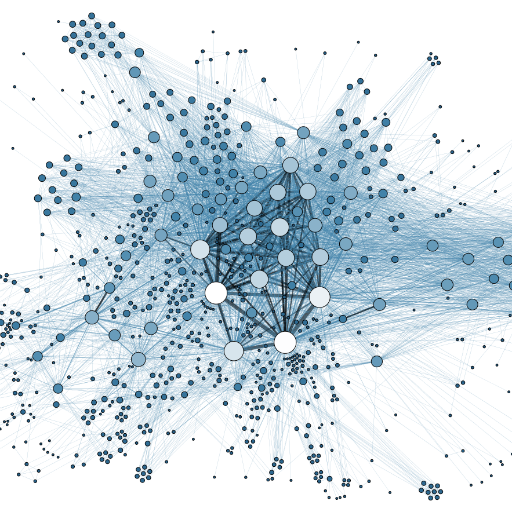

IMDB Genre Identification
Authors: Bi Wu & Chris Kardatzke
Background
This is a continuation of our previous works:
done for our mid-semester blog post, our final project was an attempt to improve our clustering of IMDB movie titles. In particular, we wanted to try to achieve better genre detection in our clustering.
One of the steps which we had already taken towards this end in our initial attempt was filtering non-English titles out of our graph. While this did achieve the goal of removing language-specific clusters from our results, we still saw clusters that were specific to particular directors or actors. For instance, one of our clusters was simply comprised of Blondie movies.
In this project, we would try implementing additional approaches to improve our performance in identifying genres. One metric which we considered as somewhat of a proxy for our success was the Gini Index of the sizes of the clusters which we produced. The motivation behind using this metric was a belief that clustering which resulted in more evenly balanced clusters was less likely to result in the actor or director-specific clusters we saw in previous attempts.
There are three approaches which we would test in this project. The first was to use node statistics to predict node cliquishness using logistic regression and contract the title graph based on the results. The second was to run Personalized Page Rank (PPR) on the projected actor by actor adjacency matrix to identify highly connected cliques of actors to remove. Lastly, we would explore transformations of the projected title by title adjacency matrix followed by VSP to try to penalize cliques.
Predicting Node Cliquishness by Logistic Regression
In our first attempt at improving our clustering, we tried to contract our graph to exclude nodes which we predicted to belong to cliques. Our motivation for doing this was to get rid of some of the clusters that were too specific to be considered any sort of genre, for instance the director-specific clusters.
To predict which nodes belonged to cliques, we generated a number of node statistics on all of the title nodes. Included among these statistics were degree and coreness, to measure a nodes connectedness, and the number of triangles at each node and degree distribution to other nodes, to measure the connectedness of the nodes’ neighbors.
Using a list of “IMDB top movies” and our previous attempt at clustering, we built a training dataset of around 1200 titles that we individually labeled as either belonging to a clique or not. From there, we fit a logistic regression model to predict which of the remaining ~90,000 nodes belonged to cliques.
We then removed all of these “cliquish” nodes from our graph, and performed clustering using VSP once again. We found that with this subsetting, using 12 clusters worked better than 8. With this change in place, the Gini index of our cluster sizes fell to .867. Most importantly, our clusters looked much better. We no longer saw as many cliquish clusters like the cluster of Blondie movies we saw in our initial attempt.